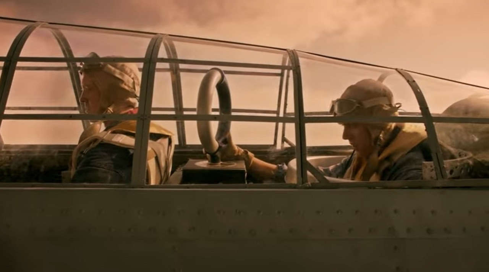
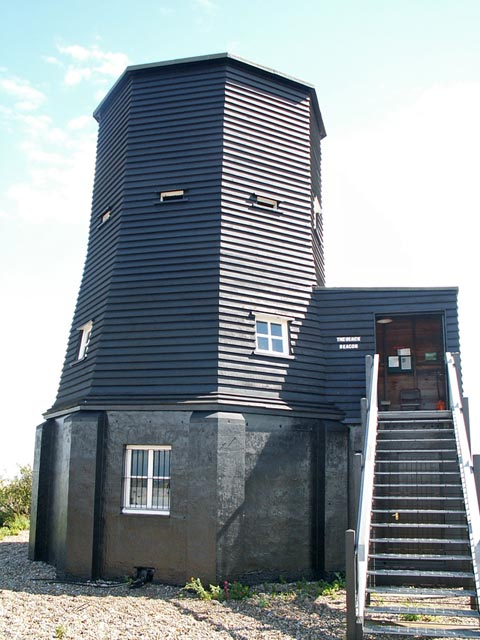
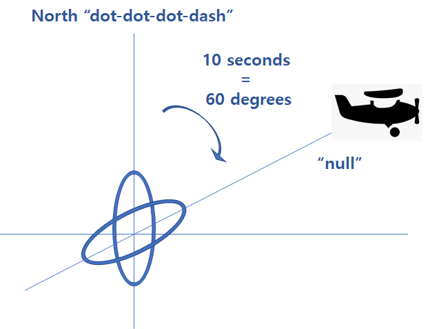
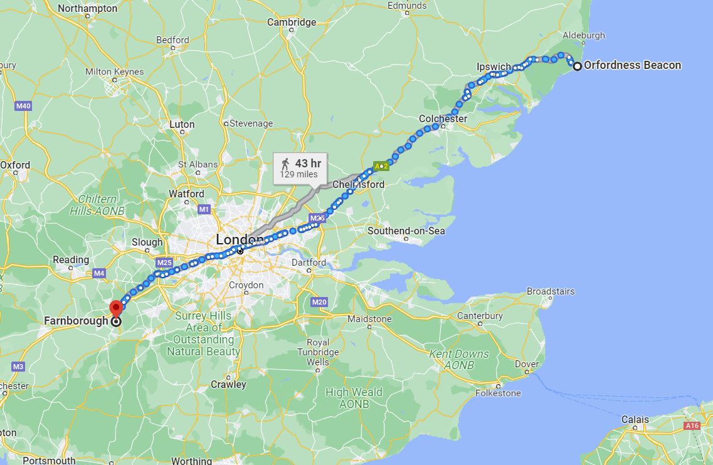
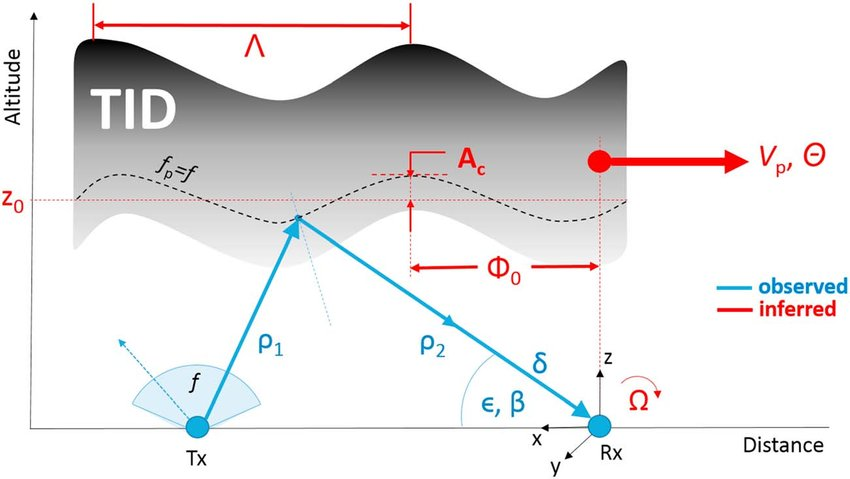
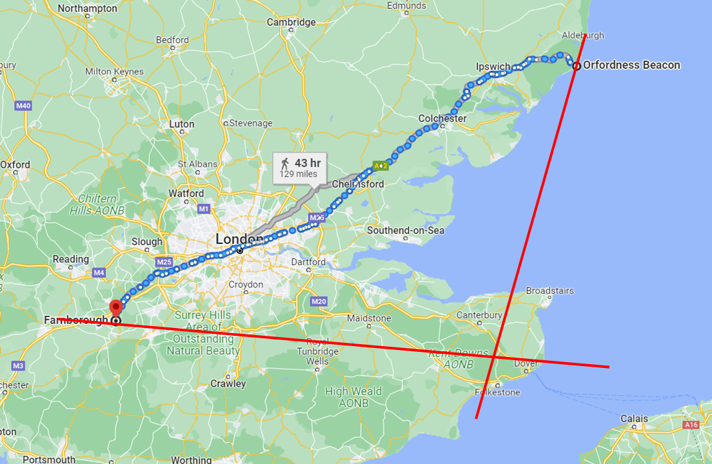
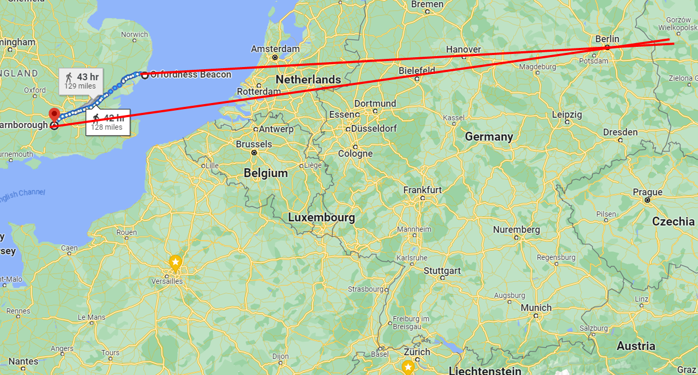
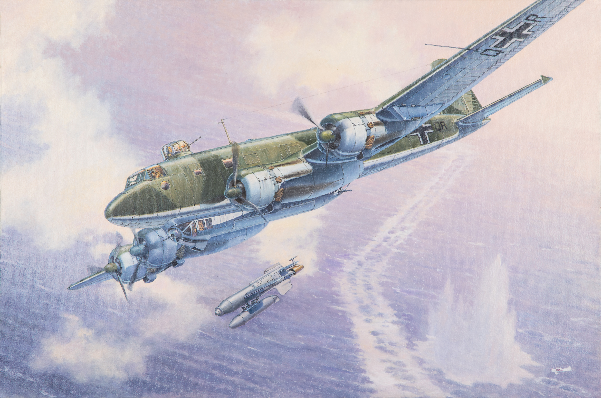
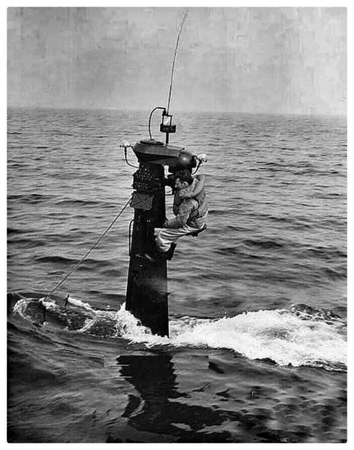

레이더 개발 이야기 (34) - Orfordness의 등대
게시: 2023-05-18T06:30:34+09:00
<조종사 혼자 타는 전투기는 대체 길을 어떻게 찾나?> WW2 중 독일의 전파를 이용한 항법 기술은 사악한 영국놈들의 jamming을 당해서 망했을 뿐, 기술 혁신의 산물. 그런데 왜 영국애들은 왜 그런 기술 혁신을 못 이루었을까? 그럴 리가 있나. 당연히 영국애들도 전파를 이용한 항법은 그 전부터 연구했고 실제로 구현도 했음. Loop antenna를 이용한 전파 방향 탐지(radio direction finding, RDF)는 무선통신 초기 때부터 있었던 기술이었고, 따라서 이걸 이용하여 초장거리 등대로 사용하려는 계획은 예전부터 있었음. 그러나 잘 안 되었던 이유는 필요한 고리형 안테나의 크기 때문. 정확한 방향을 잡으려면 고리형 안테나가 커야 했는데, 5미터짜리 대형 loop antenna는 선박에서도 부담스러운 물건이었으므로 항공기에서는 더더욱 불가능한 물건. 나중에는 개선된 기술을 통해 항공기에서도 쓸 수 있는 소형 loop antenna가 실용화되었으나, 폭격기처럼 전담 항법사가 타는 항공기가 아니라면 여전히 쓸 수 없었던 방법.

(미해군 Devastator 뇌격기의 최후방 무선통신수 좌석의 loop 안테나. 망망대해에서 자신의 모함을 찾는데 사용됨) 그런 원리를 역이용한 것이 Orfordness Beacon. 오폿니스의 전파등대는 이미 1929년 설치된 것으로서, 288.5 kHz의 저주파를 연속 송신하는 커다란 loop antenna를 분당 1회로 천천히 회전시키는 물건. 즉 1초에 6도 회전. 다만 이 고리형 안테나가 정북 방향을 향할 때는 "V"를 모르스 부호로 송신 (dot-dot-dot-dash).

(지금도 남아있는 Orfordness의 beacon.)
인근을 비행하는 항공기 조종사는 손에 스톱워치를 들고 이 288.5 kHz에 무전기 주파수를 맞추면 대개의 경우 띠~~하는 송신음을 들을 수 있는데, 계속 듣다보면 위에서 말한 V 모르스 부호 (뚜 뚜뚜 뚜우~)가 귀에 들리는 순간이 있음. 그게 고리형 안테나가 정북 방향을 향하는 순간. 그때 손에 들고 있던 스톱워치를 눌러 시간을 재기 시작. 계속 들으면 모르스 부호 이후로는 그냥 띠~~소리가 들리는데 그 소리가 점점 작아지다 완전히 무음이 되는 순간이 있음. 그 순간이 바로 오폿니스 고리형 안테나와 자신의 항공기가 90도 직각이 되는 순간. 그때 스톱워치를 눌러 그때까지 걸린 시간을 확인. 만약 그 시간이 10초라고 하면 자신의 위치는 오폿니스의 정북 방향으로부터 10초 * 6도 = 60도 선상에 있는 것임.

(Orfordness Beacon의 원리를 설명하는 그림. 실제로는 소리가 무음이 되는 null 위치는 저기 뿐만이 아니라 180도 반대 방향에도 있으므로 조종사는 저것만으로는 자기가 60도 위치인지 240도 위치인지를 파악할 수 없음. 그래서 실제로는 loop antenna가 동쪽을 향할 때 추가로 "B" (dash-dot-dot-dot)를 송신.) 다만 이건 어디까지나 오폿니스 전파등대로부터의 방향만 알 수 있을 뿐, 원래 좌표 획득(location fix)을 하기 위해서는 2곳으로부터의 방향을 알아야 함. 그래서 Farnborough에도 동일한 전파 등대를 하나 더 만듬. 다만 두 곳에서 동일한 주파수로 계속 전파를 쏘면 그게 바로 전파 jamming. 그래서 오폿니스와 판버로에서는 각각 5분씩 on & off로 전파를 송신. 즉 오폿니스에서 먼저 5분 송출하고 중단하면 이어서 판버로에서 5분 송출하고 중단. 다만 이게 오폿니스에서 보내는 전파인지 판버로에서 보내는 전파인지 구분하기 위해 판버로에서는 안테나가 정북 방향을 향했을 때 V 대신 G를 모르스 부호로 송신 (dash-dash-dot). 이렇게 하면 대략 5분 안에 항공기는 2곳으로부터의 자신의 각도를 알 수 있게 되어 좌표 획득이 가능해짐.

(위 지도는 오폿니스와 판버로 사이의 거리. 약 206km.)
<그런데 로열 에어포스는 왜 이걸 폭격기 항법용으로 안 썼을까?> 그런데 이렇게 훌륭한 Orfordness Beacon 시스템을 놔두고 왜 항법사의 실력 부족으로 독일 폭격을 못 했을까? 이유는 크게 3가지. 1) 이 시스템은 너무나 jamming이 쉬움.
2) 좌표 획득에 약 5분, 아무리 운이 좋아도 2분 이상이 필요하므로 꽤 빠른 속도로 움직이는 항공기에서 쓰기에는 오차가 꽤 큰데다 귀로 듣고 판단하는 시스템이라 폭격 유도에 쓰기에는 오차가 너무 큼. 말이 쉬워서 무음 순간을 포착하면 된다지만 점점 작아지다 어느 순간부터 다시 커지는 소리가 무음이 되는 순간을 포착하는 것이 쉽지는 않음,
3) 이런 항법 시스템은 특히 야간 폭격에 필요한 것인데, 야간에는 전리층에서의 전파 교란(Ionospheric Disturbance)이 좀더 심하게 발생하여 정확성에 영향을 줌.

4) 오폿니스와 판버로 사이의 거리는 불과 206km 정도. 영국내에서 쓰기에는 괜찮을지 몰라도 베를린 상공의 항공기가 쓰기에는 두 전파등대 사이가 너무 좁고 따라서 오차가 너무 커짐.
 
(기준점이 되는 두 등대 사이의 거리가 멀 수록, 그리고 그 등대들과 항공기와의 거리가 가까울 수록 정확도가 높아지는 것은 당연. 그런데 좁은 영국에서는....)
<영국 폭격이 아니어도 꼭 필요했던 전파 항법> 앞서 설명한 것처럼, 루프트바페에서 시도했던 beam 위주의 전파 항법 시스템이었던 크니커바인(Knickebein), 익스거레트(X-Gerät), 입실론거레트(Y-Gerät) 등은 영국놈들의 jamming으로 인해 모두 실패. 그리고 어차피 그런 것들이 jamming을 당하지 않았더라도 레이더를 앞세운 로열 에어포스의 필사적인 방공전에 휘말려 영국 폭격전은 실패로 끝났고, 무엇보다 나찌 독일군의 공세는 쏘련으로 향했기 때문에 영국 폭격에 대한 열망은 시들해졌음. 하지만 루프트바페는 그런 폭격기 유도용 전파 항법 시스템 외에 보편적인 항공기용 전파 항법 시스템을 여전히 필요로 했음. 이유는 바다. 사실 육지 위로만, 특히 햇빛이 있을 때만 날아다니는 항공기에게는 항법사의 기술이 매우 중요하지는 않음. 단, 먹구름이 잔뜩 끼어 지상의 지형을 볼 수 없는 경우는 예외. 그런데 먼 바다는 진짜 아무 것도 참조할 지형이 없는 곳이므로 항법사가 엉터리라면 적 군함 발견은 고사하고 기지로 돌아올 길을 못 찾아 연료 부족으로 바다 위에 불시착하게 되기 쉽상인 곳. 그래서 WW2 발발 이전부터 같은 로열 에어포스에서도 폭격기 사령부와는 달리 연안 방위사령부 (Costal Command) 소속 해양 초계기들의 항법사는 정말 실력있는 사람들이었음.
(초계기 콧잔등 또는 등에 나있는 저런 astro-dome을 통해 육분의로 태양과 별의 각도를 재고 있는 진짜 항법사)
그런 로열 에어포스에서도 WW2 발발로 해양 초계기는 늘어났지만 실력있는 항법사들 숫자는 갑자기 늘릴 수 없어 난리가 난 판국인데, 바다라고 해봐야 엎어지면 스웨덴이고 넘어져도 폴란드인 손바닥만한 발트해 외에는 경험해보지 못했던 루프트바페에게 프랑스 서쪽 대서양과 노르웨이 북쪽 북극항로를 날아다니며 영국 혹은 쏘련으로 가는 수송선단을 찾으라는 것은 그냥 바다에 빠져 죽으라는 이야기.

(Hs 293 전파 유도 폭탄을 투하하는 독일 해양 초계기 Focke-Wulf FW-200C-6 Condor)
게다가 보편적 전파 항법 시스템이 필요한 이유가 또 있었음. 로열 네이비 같은 전통적 뱃사람들에게 '태양과 별 말고 전파로 항로를 찾으라'는 소리는 모멸에 가까운 소리였지만, 독일 해군 크릭스마리너(Kriegsmarine)에게는 정말 전파 항로가 필요했음. 이유는 바로 U-boat. 로열 에어포스의 해양 초계기가들이 두 눈 시퍼렇게 뜨고 날아다니는 바다에서, 유보트가 부상하여 한가롭게 육분의로 태양과 별의 각도를 재는 것은 무리. 특히 슈노켈이 장착된 이후에는 슈노켈을 통해 안테나만 내놓고 전파를 수신하여 유보트의 현재 위치를 파악하는 기술은 'nice to have'가 아니라 'must have' 아이템.

(Snorkel은 만화에서 흔히 나오는 것처럼 호흡관만 물 밖으로 내밀어넣고 잠수함은 계속 수면 아래에 잠수할 수 있도록 해주는 접이식 관. 이를 통해 안테나도 물 밖으로 내밀어놓을 수 있었음.)
루프트바페는 이 문제를 해결하고자 Ernst Kramar 박사를 찾아가는데...